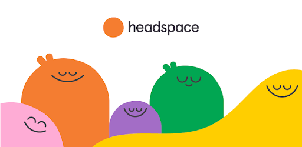

<!DOCTYPE html>
<html lang="English"></html>

<link rel="stylesheet" href="styles.css" />
<script src="javascript.js"></script>

<html>
  <head>
    <title>CV Minna Boman</title>

    <div class="header">
      
      <h1>MINNA BOMAN</h1>
    </div>

    <nav id="Navigointi">
      <ul>
        <li><a href="index.html">HOME</a></li>
        <li><a href="experience.html">WORK EXPERIENCE</a></li>
        <li><a href="education.html">EDUCATION</a></li>
        <li><a href="miscellaneous.html">MISCELLANEOUS</a></li>
        <li><a href="contact.html">CONTACT</a></li>
      </ul>
    </nav>
  </head>

  <body>
    <section>
      <div class="Container">
        <h2 id="miscellaneous">MISCELLANEOUS</h2>

        <h4>LANGUAGE SKILLS</h4>
        <div id="hobbies">
            
        <p>
          My mother tongue is Finnish, and I am fluent in English and Swedish. I
          have studied in Sweden and my second home language is Swedish.<br />
          <br />
          Jag har även jobbat på svenska och känner att i vissa fall får man
          mera ut av samarbetet när båda parter pratar samma språk. Det är
          alltså en styrka att behärska svenska flytande och det uppskattas även av
          svenskspråkiga kunder och samarbetspartners!<br />
        </p>
        </div>

        <div class="clearfix"></div>

        <br>
        <h4>IT SKILLS</h4>
        <p>
            <ul>
                <li>MS Office: Word, Excel, Powerpoint (excellent)</li>
                <li>SAP R/3</li>
                <li>Cognos</a></li>
                <li>Adobe InDesign (beginner)</li>
                <li>#mimmitkoodaa Bootcamp: HTML, CSS, JavaScript (beginner)</li>
                
              </ul>
              Fast learner, several super-user roles for different programs at Mölnlycke Health Care.<br>

                    I am <strong>super eager</strong> to learn new skills within software development! To start with, I will learn frontend techniques and after that I am planning on starting to learning some programming language, like C#.
        </p>
      </div>

      <div class="Container">
      <h4>HOW I BALANCE MY WORKING LIFE & FREETIME</h4>
      <div id="hobbies">
              
             <p>One of the best ways for me to clear my mind is go out in the forest for a walk. I often combine this with my favourite hobby, <a
            href="https://www.geocaching.com/"
            title="geocaching"
            target="_blank"
            > geocaching</a>. With this hobby I have also made many new friends and been on unforgettable adventures!</p>
        </div>

        <div class="clearfix"></div>

         <div id="hobbies-1">
                
                    <p>At the moment, I master a run streak of over 450 days in using a great app for meditating, <a
              href="https://www.headspace.com/"
              title="Headspace"
              target="_blank"
              >Headspace</a>. I have learned that the best time for me to calm down is just before I go to sleep. 
              I warmly recommend it to anyone, who sometimes feels that he/she needs a moment for him/herself!</p>
          </div>

          <div class="clearfix"></div>

          <div id="hobbies-2">
            
                <p>Another good way of calming down in this hectic world is Yin Yoga. 
                After a good, relaxing Yin Yoga class you notice that you are kind of waking up 
            from another world. It is then best to drive home carefully! Online Yin Yoga is a good
        alternative in these Covid-19 times.</p>
      </div>
      <br>
      <strong><a href="#top">Back on Top</a></strong> 
        </div>
    </section>

    
 
  <footer id="main-footer">
    <p>
      Copyright &copy; <br />
      2020 Minna Boman
    </p>
    <p>
      Paper Arts Copyright &copy; <br />
      2020 Johanna Länsivierto
    </p>
  </footer>
</body>

</html>
